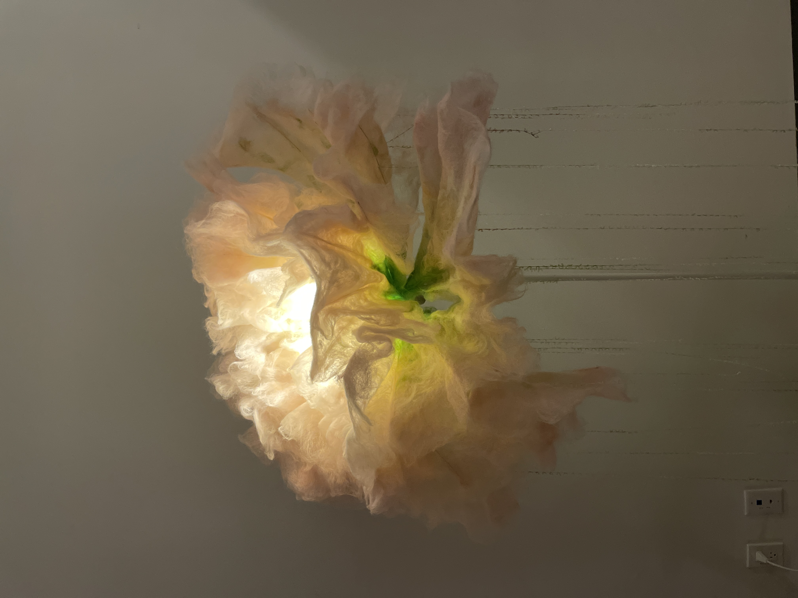
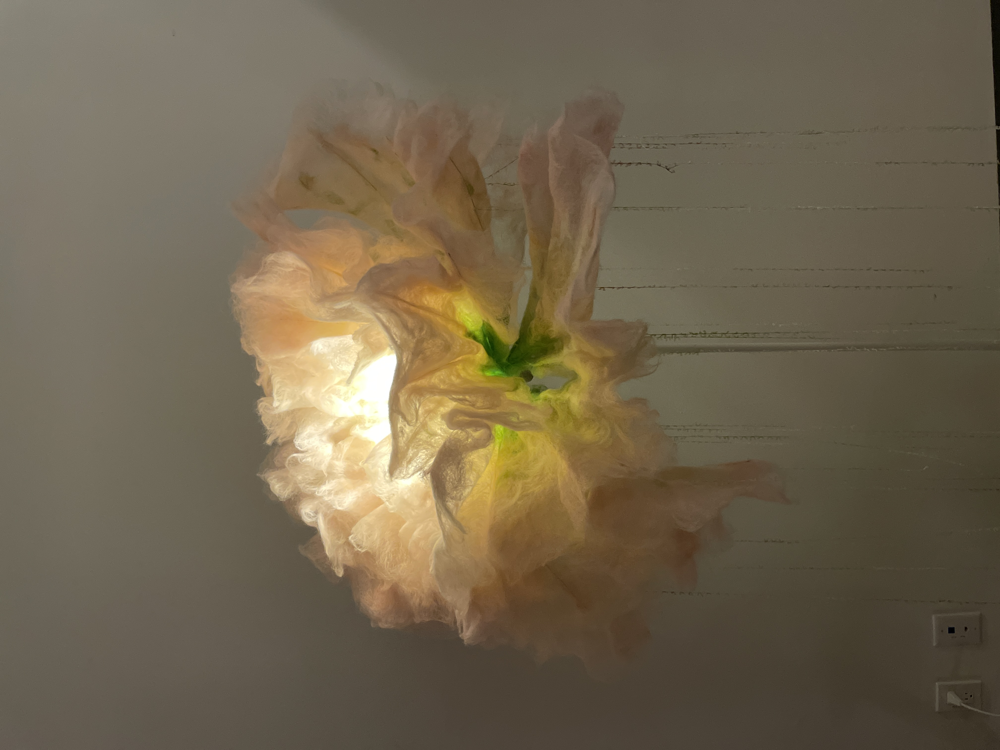
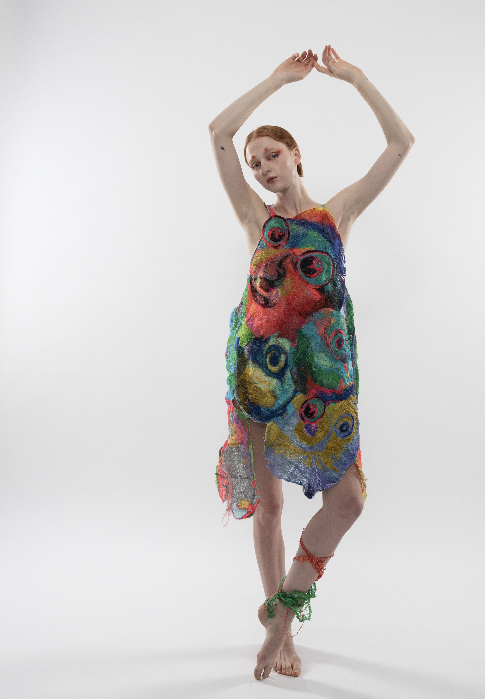
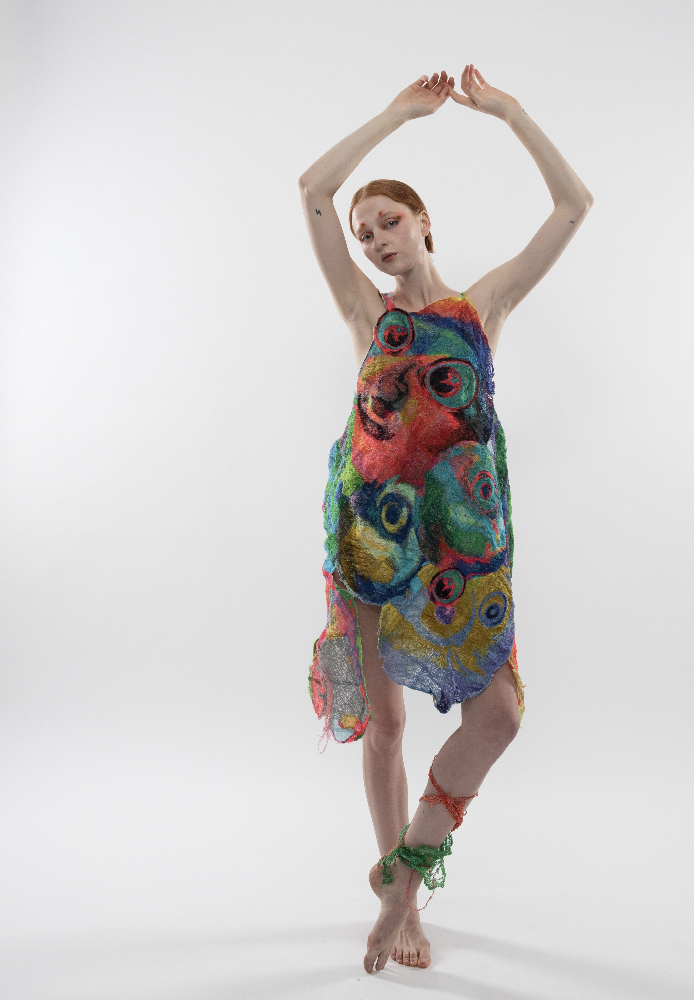

Water Remembers, 2025
This three-piece collection explores the theme of water pollution. Each piece reflects a different aspect of how water is affected, and how it speaks through the materials.
The Weight of Decay
Icelandic Wool, Corn Husk, Cotton Thread
This piece centers on a decaying ecosystem: riverside plants, crops that once thrived, and the slow death of systems dependent on clean water. Dried corn husks are integrated into the knitted wool, creating a texture that is both soft and brittle.


What the Water Holds
Weld, Cape Jasmine, Sappanwood, Madder, Cochineal on Merino Wool, Cashmere, Cotton, and Recycled Nylon Yarns
This woven work explores what lies unseen within water. Using the krokbragd technique, the piece builds color gradually in block-like patterns. It draws directly from dye experiments that combine natural dyes with metal mordants and pH variation. Dyes include cochineal, madder, cape jasmine, weld, sappen wood, cutch, walnut hull, sandalwood, henna, and onion skin. The colors move from light to dark, creating a gradual shift across the surface. This color transition builds slowly, like a quiet crescendo, showing how pollution increases over time—first invisible, then growing stronger and deeper.


Tension in the Flow
Natural Dyed Wool Fiber, Cotton Thread
This piece is made with felting and embroidery. Felting, a chaotic and sometimes violent process, shows the overflow and saturation, a struggle between the water and pollution. The piece shows the moment when pollution pours into water, soaking deep into its body. There is a sense of struggle in the fibers. The stitches move through the felt like currents. Pollution presses down, but the water pushes back. The two forces meet, creating a visible tension in the surface. It is a conflict between damage and resistance.


Pakistan Flood Response, 2024
Collaboration by Jing Pei & Yichen Pan
Data Source: UN Migration Displacement Tracking Matrix
Pakistan Flood Response
Recycled Nylon Yarn From Econyl
In 2022, storms and heavy monsoon rains in Pakistan caused widespread flooding and landslides across the country. Up to 33 million people have been affected by the floods and a total of 90 districts have been labeled by the Government of Pakistan as 'calamity-hit'.
This piece represents a total of 2,317,254 people temporarily displaced across 11 districts of Sindh province. The tufting patches represent the total population per district, with dark blue gradients representing higher concentrations. The orange woven squares reflect the concentration of displaced people in each district. Each square represents 325 people.


Breath, 2023
Breath
Felted Merino Wool
This motorized flower sculpture features petals of lightweight merino wool felt that gently open and close, illuminated by a soft, pulsing light at its center. The movement and glow evoke the quiet rhythms of nature, inviting calm and contemplation.
Woven textiles inspired by grasses surround the flower, creating a tactile landscape that suggests open fields and freedom. The piece offers a gentle space where materials respond softly to their surroundings and creativity unfolds with ease.
 

UV Purification Art
Tacky Statues, 2022
Tacky Monsters
Cotton, Polyester, Silk Thread


Tacky Flora
Cotton, Polyester, Silk Thread


Tacky Faces
Cotton, Polyester, Silk Thread
 

Tacky Dragon
Cotton, Polyester, Silk Thread


Tacky Fish
Cotton, Polyester, Silk Thread